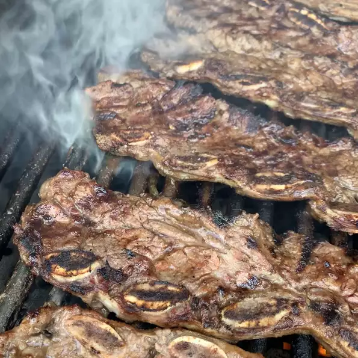

Kbbq Ribs

Description
This is an easy way to make Korean short ribs. You can also substitute chicken
breast or sliced rib-eye for the short ribs. If you use chicken or rib-eye,
you must add thinly sliced green onion tops. This can also be broiled in the
oven for the same amount of time.
Ingredients
- 3/4 cup soy sauce
- 3/4 cup water
- 3 tablespoons white vinegar
- 2 tablespoons sesame oil
- 1/2 large onion, minced
- 1/4 cup dark brown sugar
- 2 tablespoons white sugar
- 1 tablespoon black pepper
- 3 pounds Korean-style short ribs (beef chuck flanken , cut 1/3- to
1/2-inch-thick across bones)
Steps
- Pour soy sauce, water, vinegar, and sesame oil into a large, non-metallic bowl.
Whisk in onion, garlic, brown sugar, white sugar, and pepper, whisking until
sugars dissolve. Submerge ribs in the marinade. Cover the bowl and refrigerate
7 to 12 hours; the longer, the better.
- Preheat an outdoor grill for medium-high heat.
- Remove ribs from marinade and shake off excess; discard marinade.
- Cook on the preheated grill until the meat is no longer pink, 5 to 7 minutes per side.